Aktuálna ponuka
Nehnuteľnosti, ktoré ponúkam
12 nehnuteľností na predaj a prenájom. Vyberte typ, alebo napíšte lokalitu.
12 z 12 ponúk
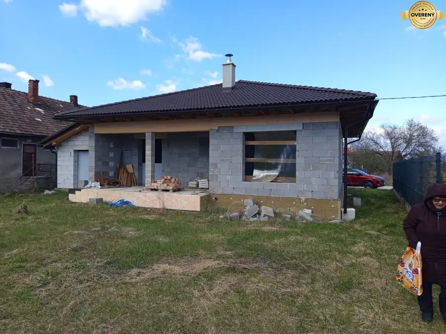
Rodinné domy9 Cena dohodouPríbovce -rodinný dom /Bungalov/ hrubá stavba Príbovce 5-izbový160 m² Predstavujeme Vám rozostavaný - nedokončený dom v obci Príbovce, okres Martin – ideálne bývanie v rezidenčnej zástavbe v slepej ulici s nádychom…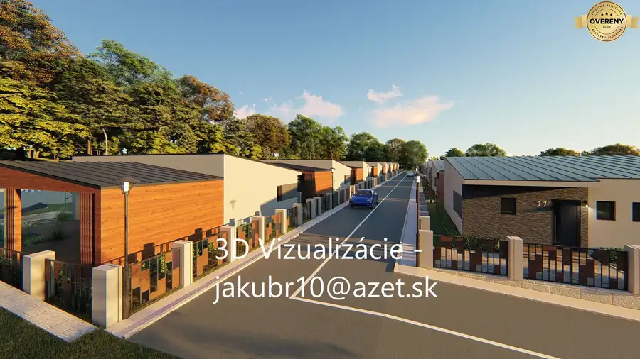
Pozemok Cena dohodouTURANY - Veľký stavebný pozemok v oblasti Trusalová Turany 11706 m² veľký rovinatý pozemok s výmerou 11 706m2 v katastri mesta TURANY, okr. Martin. v rekreačnej oblasti TRUSALOVÁ. Je vhodný na výstavbu , alebo aj pre…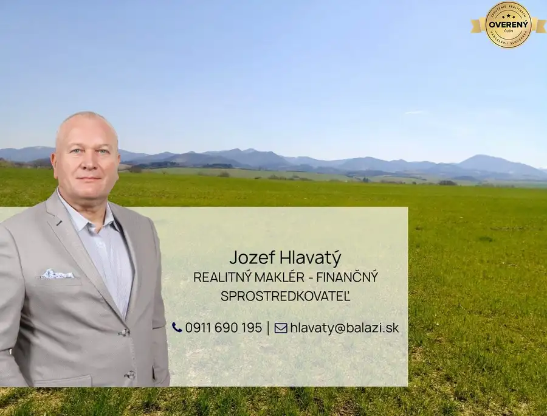
Pozemok2 310 505 €MARTIN-Záturčie pozemok na developerské účely o výmere 3653m2 Martin 3653 m² Predstavujeme Vám exkluzívne pozemok na stavebné či komerčné využitie, v krásnom a slnečnom prostredí na okraji mesta Martin /Záturčie/ v časti Veľký…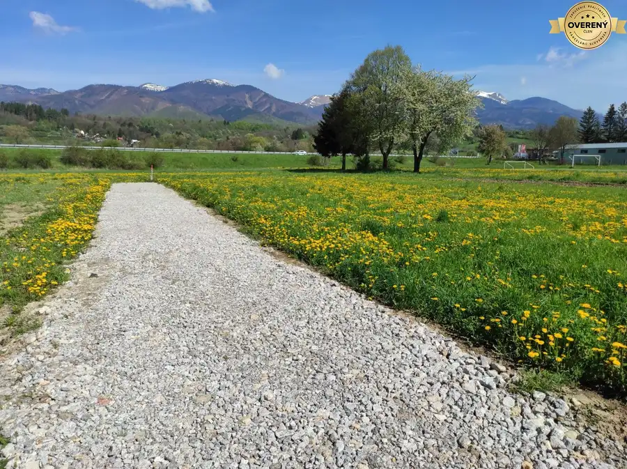
Pozemok 87 000 €TURANY-výnimočný stavebný pozemok 950m2 so sieťami Turany 898.45 m² výnimočný stavebný pozemok /budú tu stáť len dva domy/ vo výmere 950 m2 v meste TURANY, okres Martin. s vlastnou skolaudovanou prístupovou cestou, vo…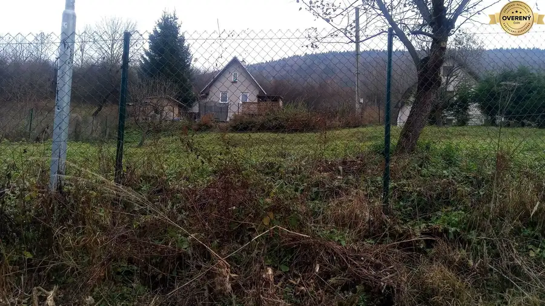
Pozemok3 52 800 €KONSKÉ - pozemok určený na výstavbu chaty, 1108 m2,okr. Martin Podhradie 1108 m² Ponúkame Vám na predaj pozemok , schválený v územnom pláne na stavbu chaty alebo rekreačného domu, - pozostávajúci z dvoch vedľa seba stojacich…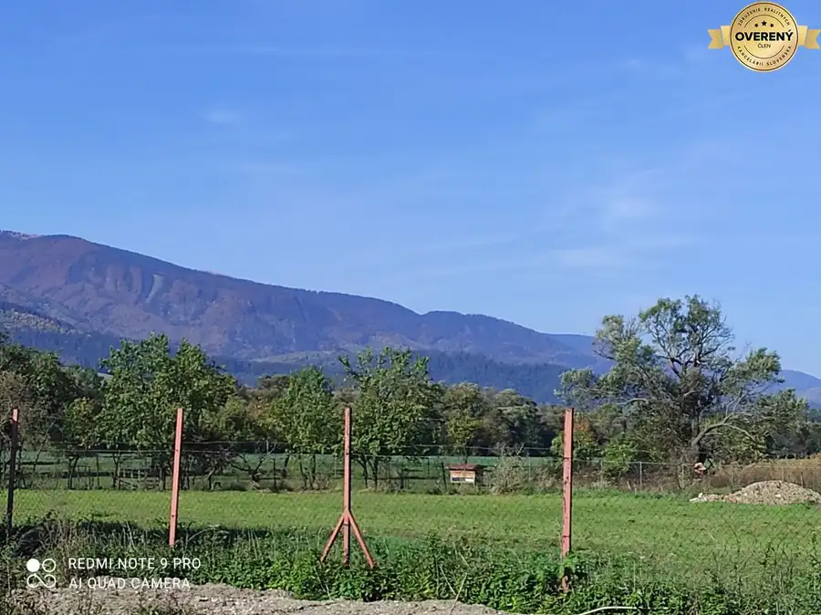
Pozemok5 76 300 €PRÍBOVCE - stavebný pozemok v novej zástavbe 733m2 všetky siete,optika Príbovce 729 m² PRÍBOVCE: Exkluzívne Vám predstavujeme: stavebný pozemok vo výmere 729 m2 v novo vybudovanej rezidenčnej lokalite: PRÍBOVCE, okres Martin. so…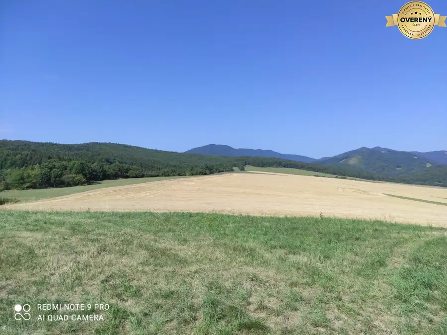
Pozemok9 120 000 €VALČA pozemok s výmerou 5800 m2, okr. Martin Valča 5800 m² Pozemok sa nachádza neďaleko územia obce , je vhodný na usadlosť, resp ako investícia alebo na stavbu apartmánov alebo mobilných domov. - Výmera:…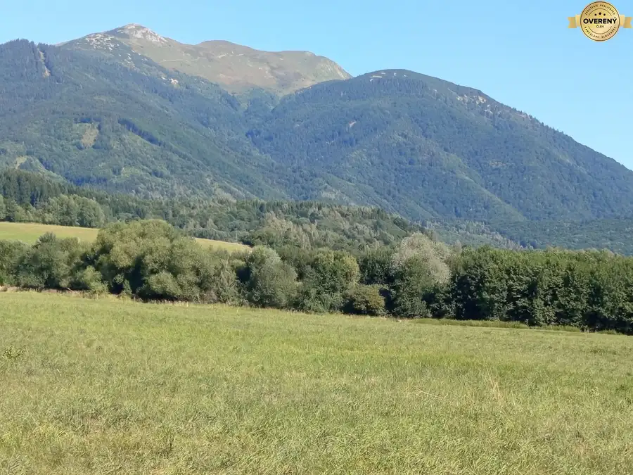
Pozemok3 53 415 €TURANY - časť TRUSALOVÁ ,rekreačný pozemok 1187m2 oproti MARKO Turany 1187 m² -exkluzívne ponúkame na predaj rekrečný pozemok v blízkosti Wellnesu MARKO. -pozemok je slnečný rovinatý a má dve prístupové cesty, v blízkosti sú…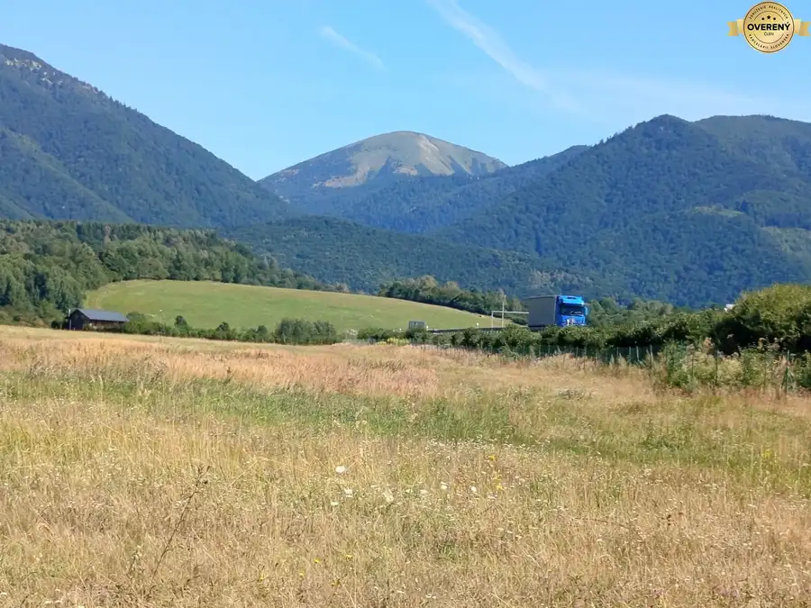
Pozemok6 95 350 €TURANY- TRUSALOVA rekreačný pozemok 1907m2 oproti MARKO Turany 1197 m² -exkluzívne ponúkame na predaj rekrečný pozemok v blízkosti Wellnesu MARCO, -pozemok je slnečný rovinatý a má dve prístupové cesty, v blízkosti sú…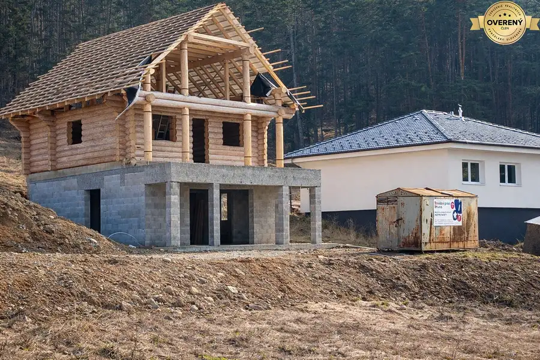
Rodinné domy5 Cena dohodouNA PREDAJ - Necpaly - zrubový dom ,takmer dokončený Necpaly 4-izbový190 m² Táto výnimočná nehnuteľnosť sa nachádza v novej zástavbe a ponúka dokonalé spojenie tradičných materiálov a moderného bývania. Vďaka svojej…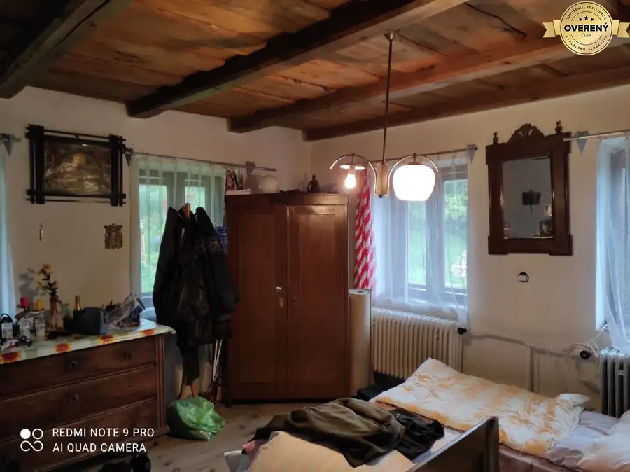
Rodinné domy10 89 000 €ČREMOŠNÉ-chalupa na pozemku 700m2 Čremošné 2-izbový236 m² Táto jedinečná nehnuteľnosť kombinuje bielu omietku a drevo, s drevenými stropmi z červeného smreka ošetrenými býčou krvou. ▪️ SPODNÁ ČASŤ: Kotolňa s…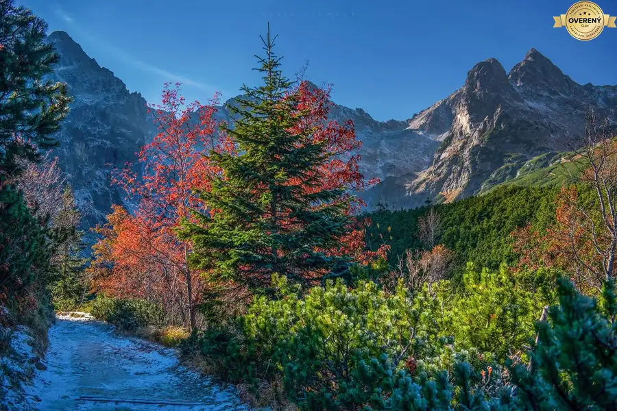
Developerské projekty Cena dohodouPríbovce - stavebné pozemky schválené v územnom pláne Príbovce 800 m² v novo vybudovanej rezidenčnej lokalite: PRÍBOVCE, okres Martin. so samostatnou prístupovou cestou Pozemky sa nachádzajú v intraviláne obce. Sú…Tomuto výberu zatiaľ nezodpovedá žiadna ponuka. Napíšte mi, čo hľadáte.